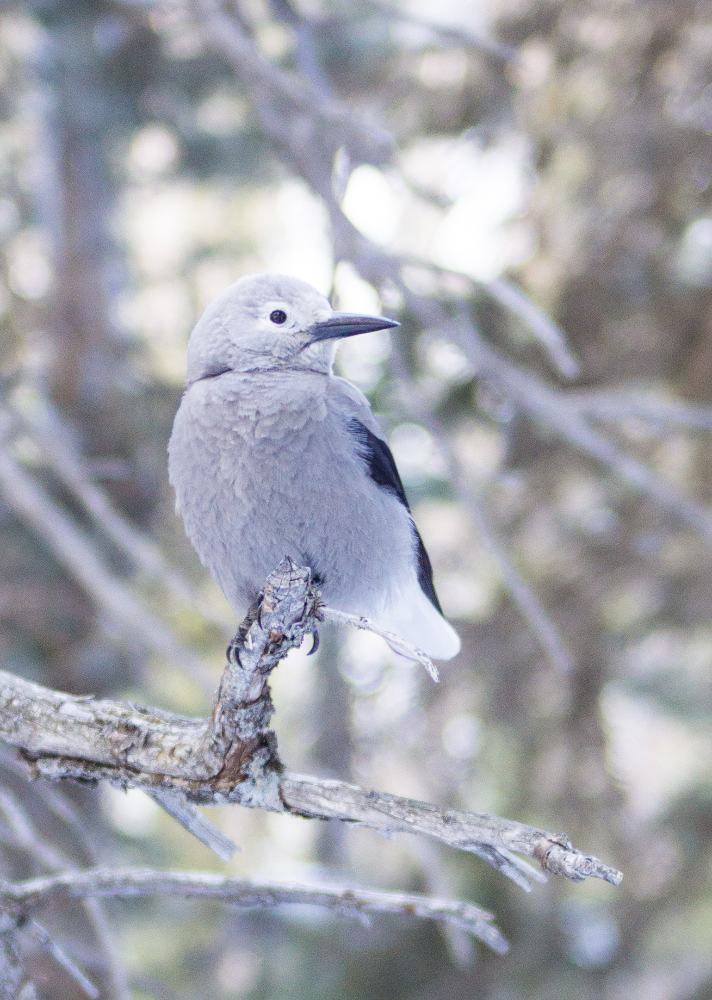
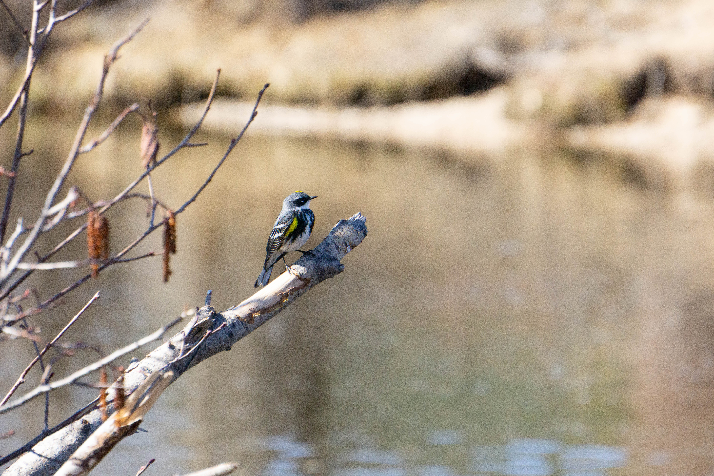
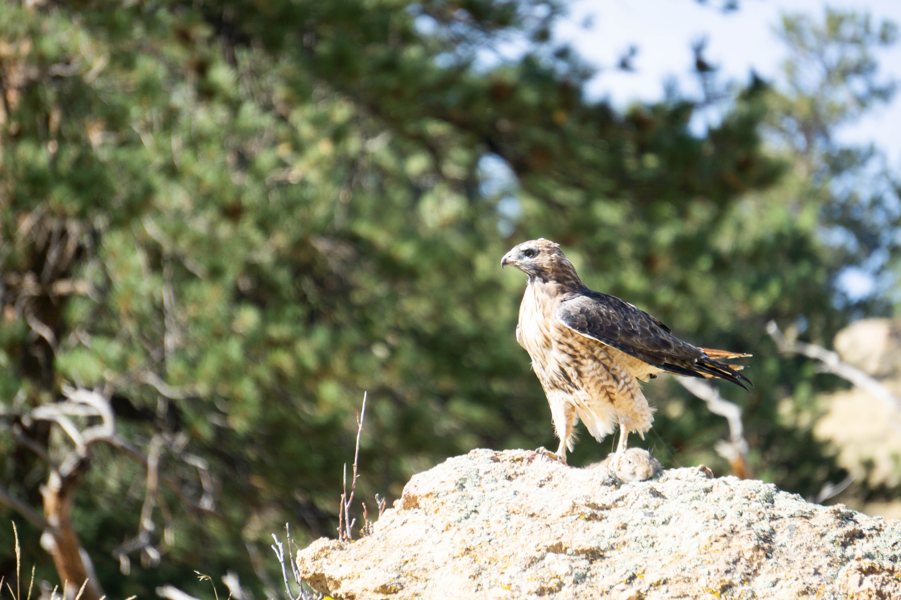
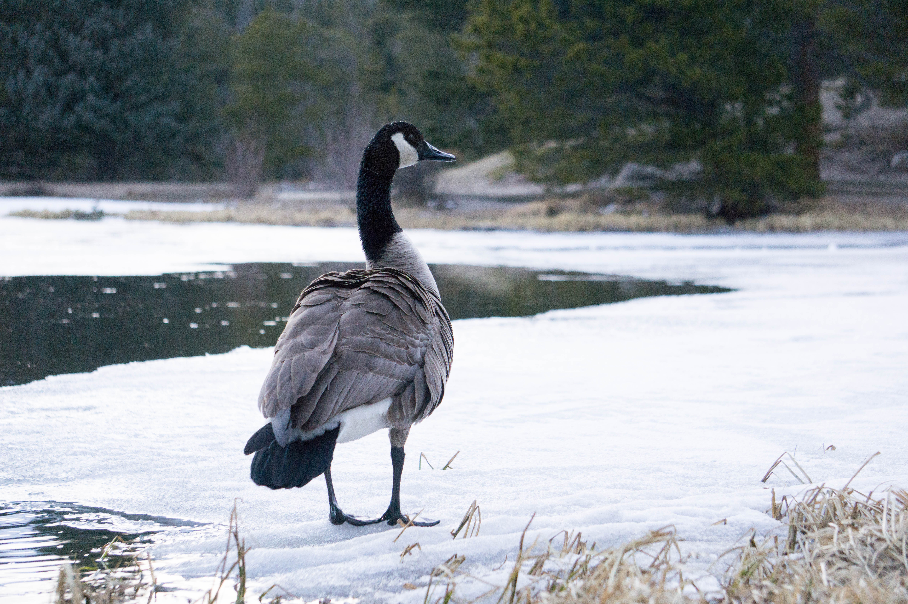
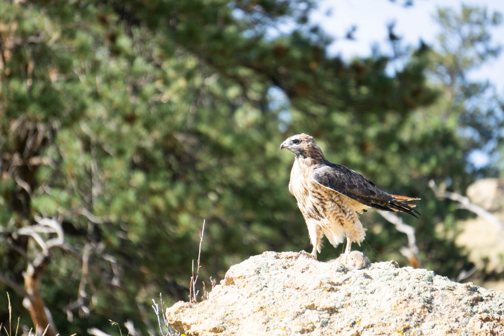
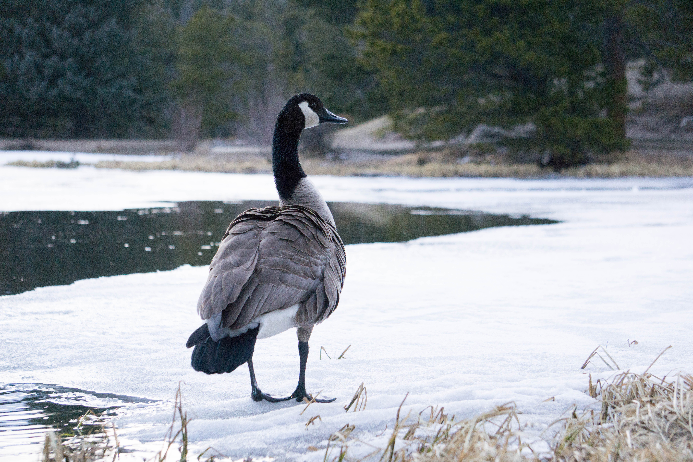
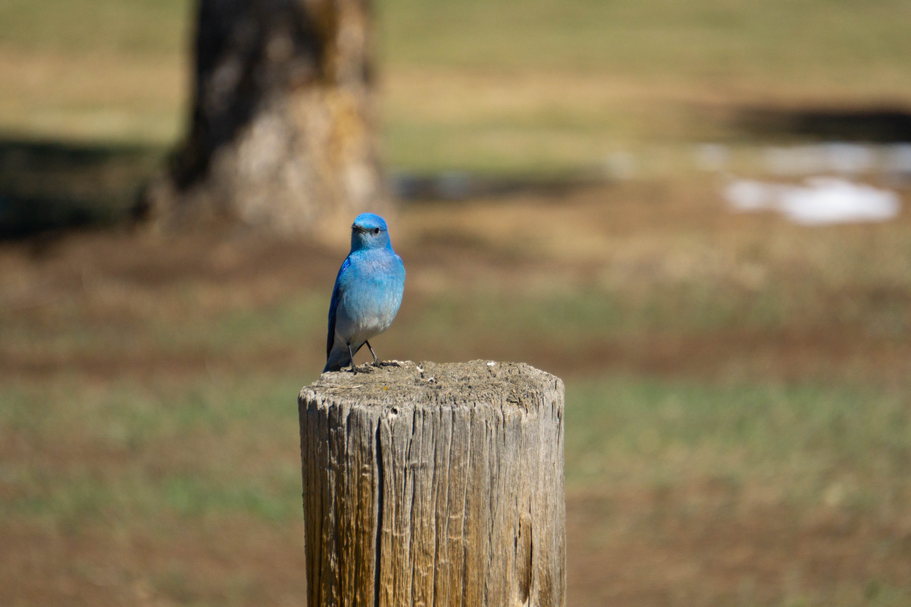
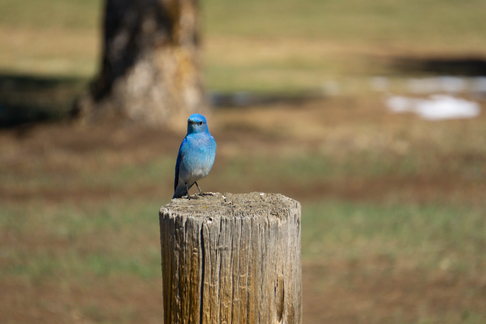

Whenever possible, I bring my camera along when I go birdwatching. Not only is it helpful in identifying birds when I can get a shot and notice small details in the photo that I didn't notice out in the field, but once in a while I get lucky with a printable shot. Ideally, bird photographers would have a long telephoto lens with a fast aperture and shoot at a high shutter speed since birds can and do move quickly and suddenly. However, I make do with what I have, which is a Sony 55-210mm on a Sony a6000 and work within the limits.
The aperture of the Sony 55-210mm is f4.5 at its fastest, which, in essence means that I need to be taking photos with a decent amount of light or else my photos will be quite dark and/or grainy. I use Adobe Lightroom for post-processing photos, for example increasing brightness in a photo where aperture was limiting the light gathering ability on a late afternoon session. Photographing birds takes patience, persistence, and some luck.
 
 



 
